软件工程笔记
软件工程概论
- 软件的概念：软件 = 程序 + 数据 + 文档
- 软件的分类：系统软件、支撑软件、应用软件
- 软件危机

- 定义 是指导计算机软件开发和维护的一门工程学科
- 软件工程三要素 方法、工具、过程
- 软件生命周期 软件定义（问题定义、可行性研究、需求分析）、软件开发（总体设计、详细设计、编码和单元测试、综合测试）、运行维护（维护）
- 软件维护分类 预防性维护、改正性维护、适应性维护、完善性维护
- [重要] 软件过程 瀑布模型 ⇒ 快速原型模型 ⇒ 增量模型 ⇒ 螺旋模型（强调风险分析） ⇒ 喷泉模型（面向对象，联想一下瀑布模型，刚好相反） ⇒ Rational 统一过程（面向对象） ⇒ 敏捷过程与极限编程 ⇒ 微软过程 ⇒
PSP/TSP
可行性研究
- 回答：所有定义的问题都有解决办法吗？
- 目的：最小代价、最短时间确定问题是否有解、值得解
- 三行：技术可行性、经济可行性、操作可行性
- 系统流程图

- 数据流图

- 数据字典：对数据流图中包含的所有元素的定义的集合。定义 4 类元素：数据流、数据元素、数据存储、处理
数据字典定义实例
数据元素编号：DC001
数据元素名称：考试成绩
别名：成绩、分数
简述：学生考试成绩，分五个等级
类型长度：两个字节，字符类型
取值/含义：优 [90-100]，良 [80-89]，中 [70-79]，及格 [60-69]，不及格 [0-59] 有关数据项或结构：学生成绩档案
有关处理逻辑：计算成绩
- 成本/效益分析
成本估计：代码行技术（软件成本 = 每行代码的平均成本 × 估计的源代码总行数）、任务分解技术、自动估计成本技术
成本估计的经验模型：1978年
Putnam提出的，一种动态多变量模型。 \(L=C_k\cdot K^{1/3} \cdot t_d^{4/3}\)成本估计模型：
COCOMO模型（基本COCOMO模型、中级COCOMO模型、详细COCOMO模型）），这模型是精确的、定量的好模型。在这里项目的开发类型分为 3 种：组织型、嵌入型、半独立型。
需求分析
- 目的：准确回答系统必须做什么
- 输出：经过审查的《软件需求规格说明书》
- 数据模型（E-R 图）⇒ 功能模型（数据流图）⇒ 行为模型（状态图）
- 需求分析的任务：
- 确定综合要求：功能需求、性能需求、可靠性和可用性需求、出错处理需求、接口需求、约束、逆向需求、将来可能提出的要求
- 分析数据要求：建立数据模型如数据字典
- 导出逻辑模型：状态转换图、数据流图、实体关系图、数据字典、数据处理算法
- 修正开发计划：深度了解用户需求，找出目前设计的不足
- 分析建模与规格说明
- 分析建模：数据模型（E-R 图）⇒ 功能模型（数据流图）⇒ 行为模型（状态图）
- 软件需求规格说明：自然语言
- 数据规范化 选第三范式就行
- 状态转换图
- 包含事件、状态、行为
- 例子：
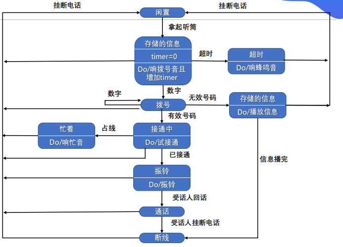
- 其他图形工具 层次方框图、Warnier 图、IPO 图
- 验证软件需求
- 一致性
- 完整性
- 现实性
- 有效性
概要设计
目的
决定怎样做
任务
- 划分组成系统的物理元素
- 设计软件结构
必要性
可以站在全局高度上，花较小的成本，从较抽象的层次上分析对比多种可能的系统实现方案和软件结构，从中选择出最佳的方案和最合理的软件结构，从而用较低的软件成本开发出高质量的软件系统。
设计过程
- 系统设计阶段
- 结构设计阶段
设计原理
- 模块化
- 抽象
- 逐步求精
- 信息隐藏和局部化
- 模块独立
- 耦合 无直接耦合、数据耦合、标记耦合、控制耦合、外部耦合、公共耦合、内容耦合
- 内聚 偶然性内聚、逻辑性内聚、时间内聚、过程内聚、通信内聚、顺序内聚、功能性内聚
启发规则
- 改进软件结构提高模块独立性
- 模块规模应该适中
- 深度、宽度、扇出、扇入应适当
- 深度 软件结构中控制的层数
- 宽度 软件结构内同一个层次上的模块总数的最大值
- 扇出 一个模块直接控制的模块数目
- 扇入 一个模块被多少个上级模块直接调用的数目
- 模块的作用域应在控制域之内，怎样修改才能做到这点
- 把判定点上移
- 把在作用域内但不在控制域内的模块移动到控制域内
- 力争降低模块接口的复杂度
- 设计单入口单出口的模块
- 模块功能可以预测
描绘软件结构的图形工具
- 层次图和
HIPO图：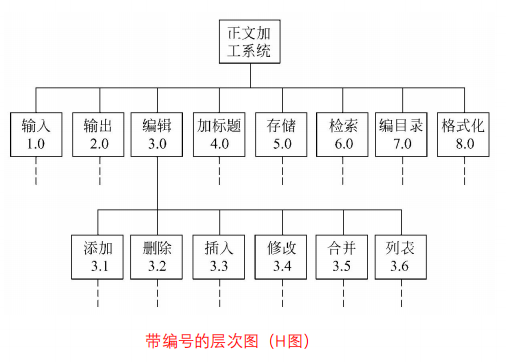
- 结构图：
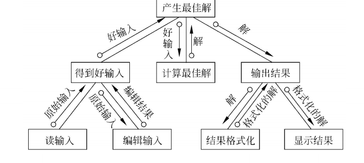
面向数据流的设计方法
- 概念
- 变换流 信息沿输入通路进入系统，由外部形式变换为内部形式，经过处理后输出到输出通路
- 事务流 数据是以事务为中心的，数据沿输入通路到达一个处理 \(T\)，这个处理根据输入数据的类型在若干个动作序列中选出一个来执行
- 设计过程
- 变换分析 是一系列设计步骤的总称，经过这些步骤把具有变换流特点的数据流图按预先确定的模式映射成软件结构
- 事务分析 数据流具有明显的事务特点（指有一个明显的事务中心，如 ATM 机）时采用事务分析方法。该方法和变换分析的主要差别是数据流图到软件结构的映射方法不同。
- 设计优化
- 在不考虑时间因素的前提下开发并精化软件
- 在详细设计阶段选出最耗费时间的模块，仔细地设计它们的算法
- 使用高级程序设计语言编写程序
- 孤立出大量占用机器资源的模块
- 必要时重写占用大量机器资源的模块
详细设计
目的
回答具体该如何设计软件。它不是具体地编写程序，而是设计程序的蓝图。
程序结构设计
- 概念 一种设计程序的技术，采用自顶向下、逐步求精的设计方法，和单入口、单出口的控制接口。
- 控制结构
- 函数结点 结点有一个入口线和一个出口线
- 谓词结点 结点有一个入口线和两个出口线，而且它不改变程序的数据项的值
- 汇点 结点有多个（\(\geq 2\)）入口线和一个出口线，而且它不执行任何运算
- 正规程序
- 定义 具有一个入口线、一个出口线。且对于每个结点，都有一条从入口线到出口线的通路通过该结点
- 正规子程序
- 定义 一个正规程序的某个部分仍然是正规程序，那么称它为该正规程序的正规子程序
- 基本程序
- 定义 如果存在封闭结构，封闭结构都是正规程序，且不包括多于一个结点的正规子程序（即它是一种不可再分解的正规程序）
- 两个结点之间所有没有重复结点的通路组成的结构称为封闭结构：
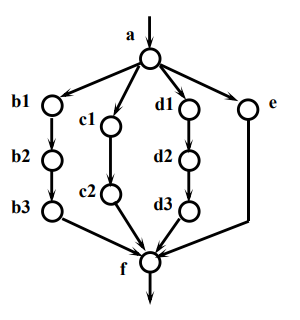
- 三种基本控制结构（顺序结构、选择结构、循环结构）和两个扩充控制结构（多分支结构、UNTIL循环结构）都是基本程序
- 用以构造程序的基本程序的集合称为基集合
- 如果一个基本程序的函数结点用另一个基本函数程序替换，产生的新的正规程序称为复合程序
- 由基本程序的一个固定的基集合构造出的复合程序，称为结构化程序
- 结构化定理 任一正规程序都可以函数等价于一个由基集合{顺序，If-else-then，While-do}产生的结构化程序
- 结构化步骤 给函数结点和谓词结点编号 → 函数结点加出口赋值块 → 谓词结点加出口赋值块并汇合 → 构造循环体：
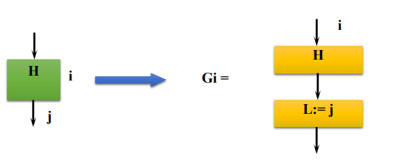
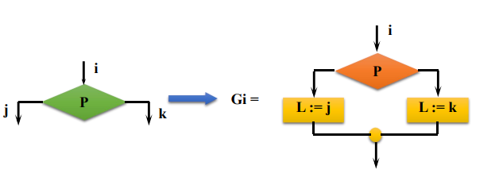
- 总结 看了半天终于懂了这 SB PPT 在讲啥，其实很简单：把所有的函数结点和谓词结点编号，这些结点（包括函数和谓词）下一步去哪个结点也记一下，搞一个 SB 变量 L（代表第 \(i\) 个结点），暴力弄一堆判断判断 L = 1/2/3/4/5……，最 SB 的来了，每个 L 下面都挂一个结点，出口拉回去就行。如图：
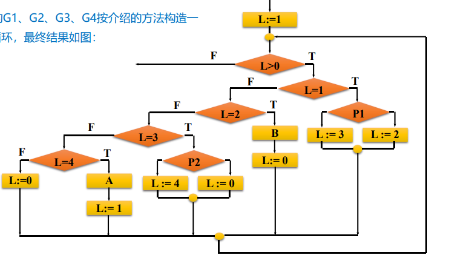
人机界面设计
- 必须考虑的四个问题：
- 系统响应时间 指从用户完成某个动作（按回车键或点击鼠标），到系统给出响应之间的时间间隔
- 用户帮助设施
- 出错信息处理
- 命令交互
过程设计工具
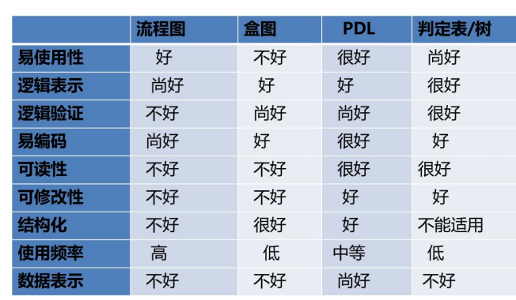
- 程序流程图（Flowchart）
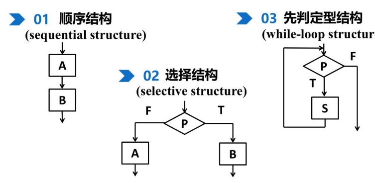
- 盒图（N-S）
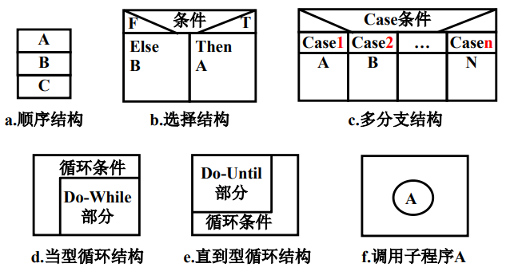
- PAD 图
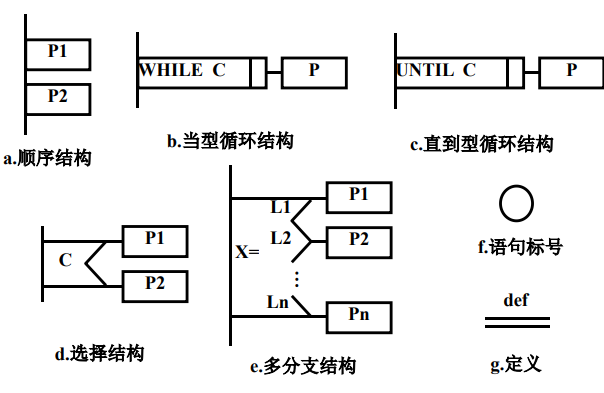
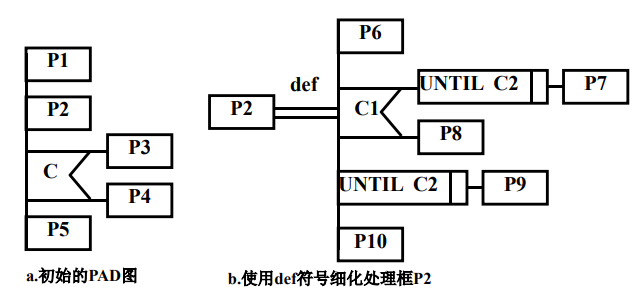
- 判定表
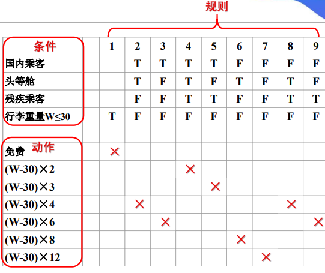
- 判断树
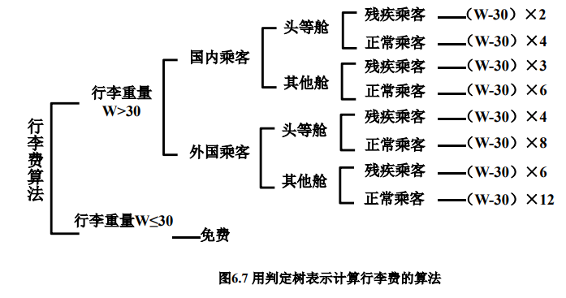
- 过程设计语言（Procedure Design Languag）
面向数据结构的设计方法
- Jackson 图
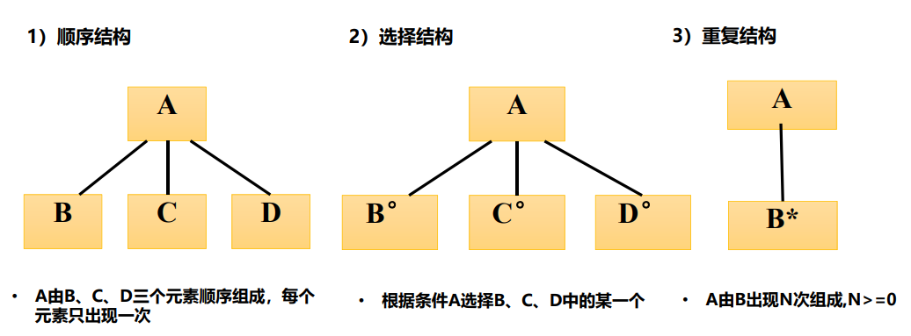
- 改进的 Jackson 图
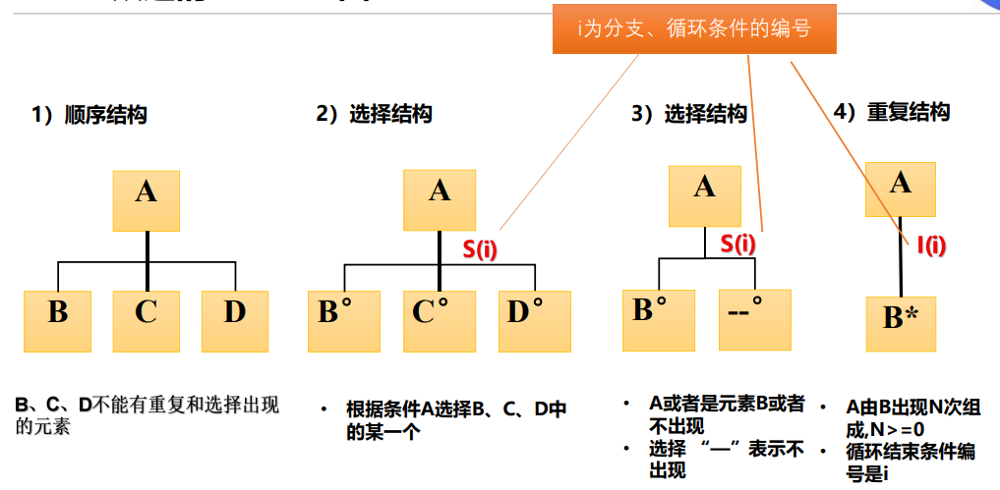
- Jackson 方法
- 目标 得出对程序处理过程的详细描述
- 步骤
- tmd 有点麻烦啊，做题遇到了再来完善，感觉不考